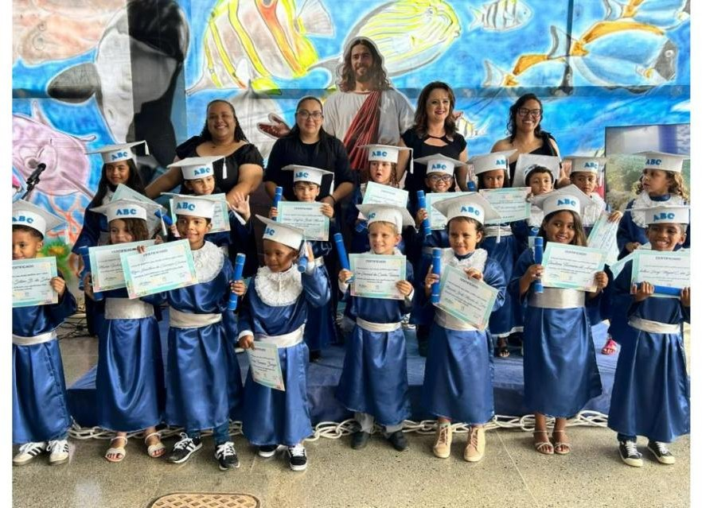
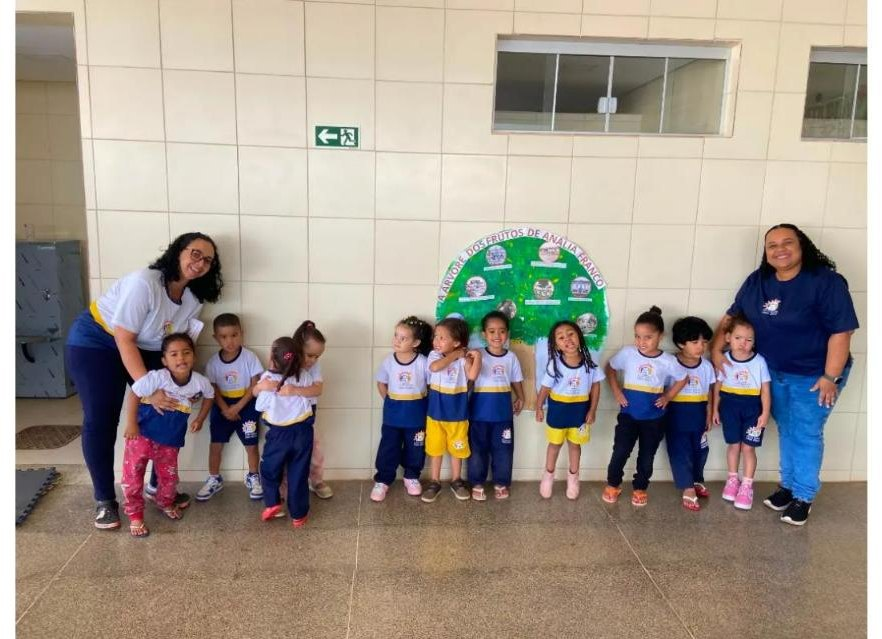
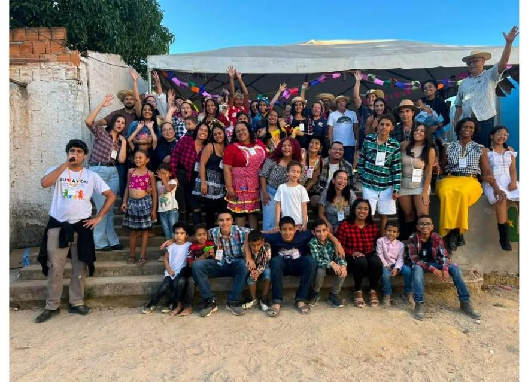
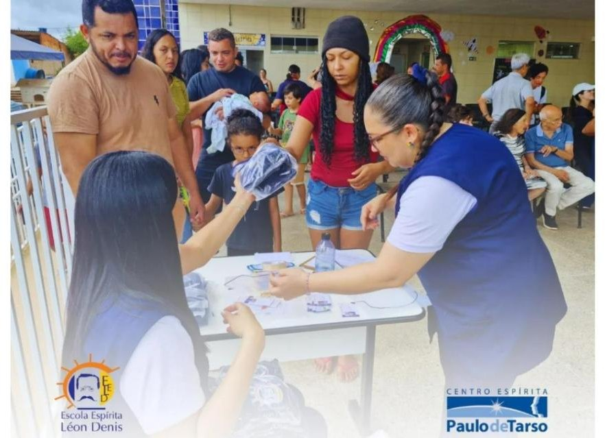
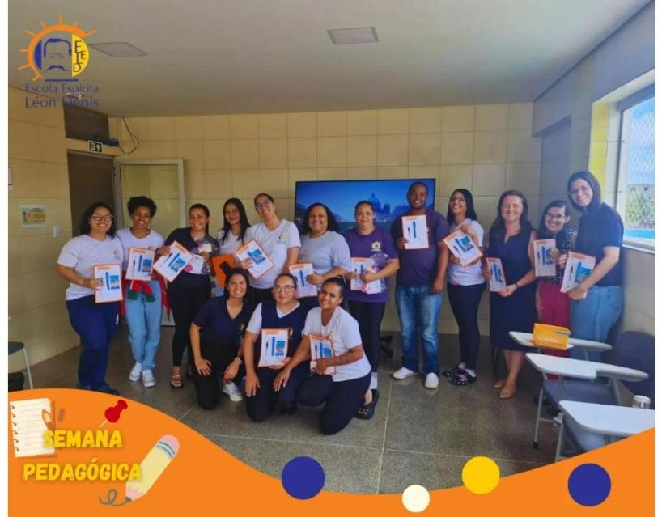

Creche e Educação Infantil
Atendimento em período integral a crianças pequenas, com rotina pedagógica, cuidado e três refeições diárias preparadas na cozinha da própria casa.

Somos uma associação filantrópica no Sol Nascente, em Ceilândia/DF. Educação gratuita, alimentação diária e acolhimento integral. Sem custo para nenhuma família. Nenhum dia interrompido desde 2005.
As Obras Sociais do Centro Espírita O Consolador foram fundadas em 18 de setembro de 2005, em Ceilândia. Nasceram para praticar a caridade material e moral de forma — nas palavras do próprio estatuto — planejada, diária e sistemática.
Duas décadas depois, a obra atende famílias do Setor Habitacional Sol Nascente, território onde metade dos domicílios vive com até um salário mínimo e onde há mais de oito mil crianças de zero a quatro anos. O atendimento é gratuito e prestado sem distinção de cor, raça, credo político ou religioso.
Somos uma associação privada sem fins lucrativos, com CNPJ ativo desde 2007, diretoria eleita em assembleia e dirigentes que não recebem qualquer remuneração — regra expressa em nosso estatuto.

Criada em 2021 como desdobramento natural do trabalho social da casa, a escola oferece creche, educação infantil e anos iniciais do ensino fundamental em período integral — com alimentação, material e uniforme incluídos.
Atendimento em período integral a crianças pequenas, com rotina pedagógica, cuidado e três refeições diárias preparadas na cozinha da própria casa.
Anos iniciais com escola credenciada junto à Secretaria de Estado de Educação do Distrito Federal, corpo docente próprio e coordenação pedagógica.
Atendimento pedagógico humanizado a crianças com deficiência e necessidades específicas, respeitando individualidades e potencialidades.

A unidade está preparada para atender cerca de 230 criançasREF 02 — e atende 90. As salas estão de pé, a cozinha funciona, o refeitório está pronto. O que impede a escola de receber mais crianças não é espaço físico: é o custeio de professores, alimentação e material.
É por isso que cada doação a esta casa tem efeito imediato e visível. Não estamos construindo do zero: estamos abrindo uma porta que já está no lugar.
Não separamos educação de assistência: a criança que estuda aqui pertence a uma família que também é acolhida por esta casa.
Creche, educação infantil e ensino fundamental gratuitos, com musicalização, atividades culturais e formação cidadã.
Incentivo à leitura com participação das famílias no acompanhamento das atividades das crianças.
Apresentações musicais, teatrais e culturais reunindo crianças, famílias e comunidade escolar.
Desenvolvimento artístico, emocional e cognitivo por meio da música e da expressão corporal.
Consciência ambiental, sustentabilidade e contato das crianças com a natureza.
Campanhas educativas de prevenção à violência, fortalecimento emocional e valorização da vida.
Ação solidária de estímulo à empatia, com visitas a instituições de acolhimento de idosos e crianças.
Festa junina aberta à comunidade, que em 2026 reuniu centenas de moradores do Sol Nascente.
Atendimento pedagógico a crianças com deficiência, respeitando ritmos e potencialidades.
Em 7 de julho de 2026, no Plenário do Senado Federal, as Obras Sociais O Consolador foram uma das três instituições beneficentes do Brasil escolhidas para receber a Comenda de Incentivo à Caridade Chico Xavier.
A homenagem reconhece aqueles que se reconhecem no próximo, fazendo da caridade um compromisso com a vida e com a dignidade humana.
Nossas crianças estiveram lá, de uniforme, no plenário da Casa. Para uma escola que funciona na maior região de vulnerabilidade do Distrito Federal, aquele dia disse mais do que qualquer relatório.
Não pedimos doação para uma causa abstrata. Pedimos o custo exato de uma criança — calculado sobre a folha real desta escola, com professora, monitora, cozinha, encargos e estrutura.
Todos os botões de doação desta seção apontam provisoriamente para a área de contato. Ligar ao meio de pagamento definitivo quando ele for definido.
mantêm uma criança nesta escola por um ano letivo inteiro — em período integral, com alimentação e material.
Quero apadrinhar uma criançaFazemos por 59% do menor valor da tabela oficial do poder público. Quem doa aqui não está financiando caridade: está comprando eficiência que o Estado não alcança.
A escola está preparada para cerca de 230 crianças e atende 90. As salas existem, a cozinha funciona. Cada novo padrinho abre, literalmente, uma cadeira que já está no lugar.
Meta: 60 novas matrículas até o fim do ano letivo de 2027.
Apadrinhar uma vagaMeio de doação ainda não conectado. É preciso a chave PIX institucional, o QR Code e o link da plataforma de doação recorrente. O endereço divulgado hoje na bio do Instagram — oconsolador.colabore.org — retorna erro 404.
Não são campanhas de marketing. É o registro do que a comunidade do Sol Nascente viveu dentro desta escola.
Uma das três instituições beneficentes do Brasil escolhidas para receber a Comenda de Incentivo à Caridade Chico Xavier. As crianças foram, de uniforme.
Ver a homenagem
A escola abriu os portões para o bairro inteiro pela primeira vez: comidas típicas, quadrilha, brincadeiras e centenas de moradores dentro de casa.
Ver as fotos
Entrega feita com o apoio de doadores e padrinhos, seguida de reunião com as famílias. Nenhuma criança começou o ano letivo sem material.
Como apadrinharBeca, diploma e nome chamado no microfone. Para muitas dessas famílias, é a primeira formatura de alguém dentro de casa.
Ver as fotosSua empresa pode manter uma turma inteira desta escola por um ano — com contrapartida institucional, relatório de aplicação dos recursos e visita técnica à unidade. É a forma mais direta de transformar orçamento de responsabilidade social em criança sentada em sala de aula.
Emitimos recibo, prestamos contas documentalmente e mantemos o parceiro informado sobre a turma apoiada ao longo de todo o ano.
Contribuição pontual ou mensal. Alimentos, uniformes, material escolar e recursos para a folha da escola.
Fazer uma doação
Educação, cozinha, manutenção, eventos, apoio administrativo, escuta e visitas fraternas às famílias.
Quero ser voluntárioEmpresas e instituições que queiram apoiar projetos, patrocinar turmas ou firmar parcerias formais.
Falar com a diretoriaPara matrículas, doações, voluntariado ou parcerias — a porta está aberta e o telefone atende.
R$ 7.404 mantêm uma criança nesta escola por um ano letivo inteiro. R$ 617 por mês. R$ 37 por dia.
{kind=link}
{kind=link}
{kind=link}
{kind=link}
{kind=link}
{kind=link}
{kind=link}
{kind=link}
{kind=link}
{kind=link}
{kind=link}
{kind=link}
{kind=link}